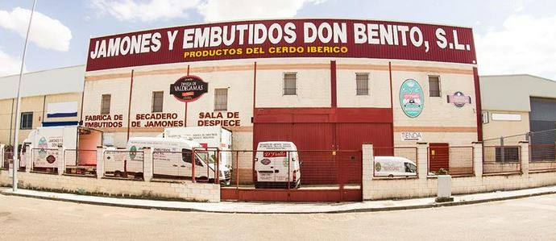

POR TODA ESPAÑA
Distribuimos a cualquier parte de la península utilizando los más modernos sistemas de refrigeración para conseguir que nuestros productos lleguen al consumidor en estado óptimo. Vendemos tanto a clientes finales como a empresas distribuidoras, almacenes, grandes superficies, cooperativas, supermercados y tiendas.